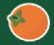

/Stickers/Purple Banana.png)
/Stickers/Red Diamond.png)
/Stickers/Blue Banana.png)
/Stickers/Tropical Pink Oval.png)
En Temporada es una iniciativa que
te ayuda a tomar una
decisión consciente
de las frutas  y verduras que consumes.
Te ayudamos a disfrutar de alimentos
sabrosos ,
mejores para el planeta
y buenos para tu
comunidad local.